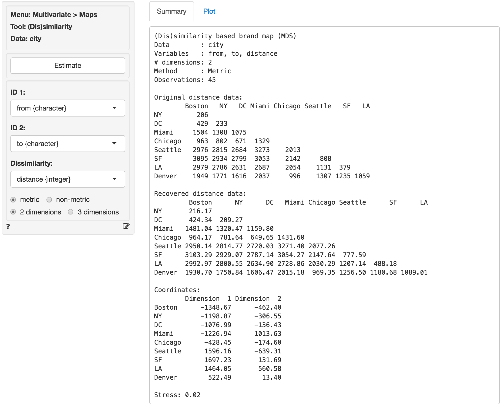
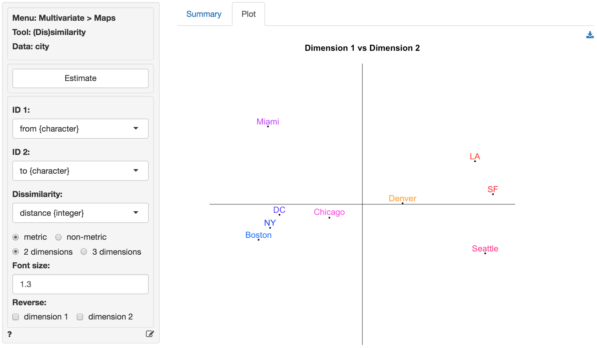
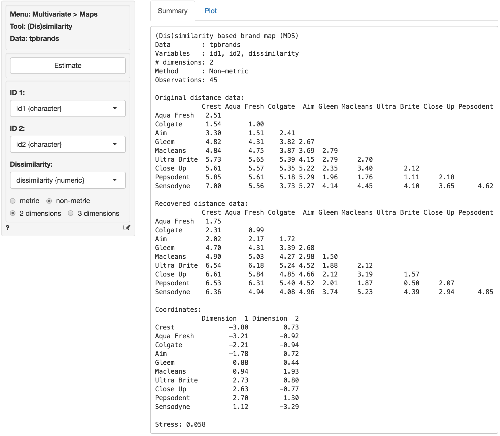

Multivariate > Maps > (Dis)similarity
Brand maps based on (dis)similarity data can be analyzed using Multi-Dimensional Scaling (MDS)
Example 1
The city data (city) contains information on distances in miles between 10 major cities in the US. Distances for 45 (10 x 9 / 2) from-to city pairs are provided. These data are used to illustrate that MDS can take simple data on distances (or on brand dissimilarities as we will see) and create a 2-dimensional map that accurately depicts the relative city (or brand) positions.
To load the city data go to Data > Manage, select examples from the Load data of type dropdown, and press the Load examples button. Then select the city dataset. In Multivariate > Maps > (Dis)similarity select from as ID 1, to as ID 2, and distance as the Dissimilarity measure. The original distances are shown in (lower triangular) matrix form in the screenshot below. If the analysis is successful we expect cities that are close (e.g., Washington DC and New York) to also be located close together on the map. Cities that are far apart (e.g., Seattle and Miami) should also be positioned far apart in the map.
The basic measure of (lack of) fit for MDS is called Stress. If MDS cannot create a map that accurately describes the original data this will result in high stress. Stress values of .1 are generally considered fair, .05 is good, and .01 or lower is excellent. High stress values indicate that a dimensionality of three (or higher) is needed to accurately depict the available data. For the city data the stress value is equal to .02 which is good. In the Summary tab we also see the coordinates that will be used to create the two-dimensional map show in the Plot tab and the recovered distances (i.e., how far the cities are apart in the generated map).

In the graph from the screen grab of the Plot tab shown below the relative locations of Los Angeles, Boston, etc. look wrong. This is due to the fact the MDS program has no information on North, South, East and West. We can flip the plot in Radiant to see if map becomes easier to recognize and interpret.

To create the plot below we clicked the check-boxes for dimension 1 and dimension 2. After flipping the plot along both the horizontal and vertical axis we see that the relative locations of the cities look quite good. Note that this map is flat, i.e., there is no correction for the curvature of the earth.

Example 2
The following plot is based on similarity data for a set of toothpaste brands (tpbrands is available as one of the example datasets). Respondents were asked the following question: “Please rate the following pairs of toothpaste brands on the basis of their similarity (1 = very similar, 7 = very dissimilar).” for all pairwise combinations of 10 brands, i.e., 45 comparisons. MDS will try to create a map that reproduces as accurately as possible the original dissimilarities (or perceptual distances) provided by the 50 respondents. The original dissimilarity ratings are shown in (lower triangular) matrix form in the figure below. From these data we can already see that the respondents perceive some brands to be very similar (e.g., Ultra Brite and Pepsodent have an average dissimilarity score of 1.11) and others to be very dissimilar (e.g., Crest and Sensodyne). The stress value for a two-dimensional solution is quite good (.058). As we might expect, the original and recovered distances shows that the fit is not as good as for the city data.

The coordinates shown in the Summary tab are used to plot the brands in two dimensions in the Plot tab. In the plot we see that Aqua Fresh and Colgate as well as Ultra Brite and Pepsodent are located very close together. This is consistent with the original data. Sensodyne and Crest, however, are positioned at opposite ends of the plot. Again, this is consistent with the original data and provides visual confirmation that MDS was able to create a plot that fits the data well.
From the plot a manager might conclude that the brands that are closest together in the map are perceived by consumers as close substitutes and, hence, close competitors in the minds of consumers in this market segment. A manager for Aqua Fresh or Macleans, in contrast, might focus less on Sensodyne when developing a competitive positioning plan for her brand. An important limitation of brand maps based on (dis)similarity data is that the axes are difficult to interpret. For example, why are Close-up and Crest located at opposite ends along the horizontal axes? The researcher could ask respondents to explain the meaning of the axes or else obtain additional attribute information for the brands and correlate/overlay these on the plot to facilitate interpretation. Such attribute data could, however, also be used to create a brand map without the need for (dis)similarity ratings (see Multivariate > Maps > Attribute).